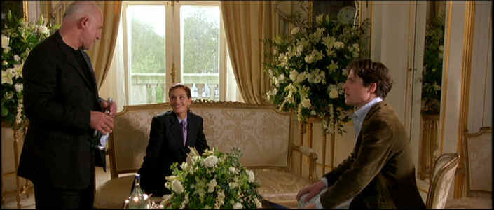

|
Notting
Hill(SE)/B,A-
|
|
Universal/1999/124m/ANA 2.35
|
Notting Hill is definitely a film designed
to capitalize on the screen presence of Julia Roberts. The star
plays hot movie star Anna Scott on the loose in London who meets
a mild-mannered bookseller and somehow falls for the guy. That’s
the big stretch of the movie. Fortunately, Hugh Grant plays
storeowner William Thacker with terrific self-effacing charm,
making a fine match for Roberts’ inherent glamour. Notting
Hill is the neighborhood where Thacker lives and works and
the look and feel of the area is replicated with warm detail,
including the characters that gravitate to this type of
neighborhood. There’s an even daffy housemate, Spike,
adding layer of broad hilarity to the otherwise reserved humor.
 |
|
Horse and Hound, of
course! ©Universal |
The material seems stretched with elements repeating themselves.
This is not meant to imply that the charm is lost or the film
becomes boring. It’s easy to enjoy Notting Hill from
start to finish. The cast is pleasant company and the sense of
humor of the writer and director is consistently chipper. Adding
the madness of Spike to the mostly reserved group of characters
is sheer inspiration and gets enormous mileage from his shabby
presence.
Directed by Roger Michell in earnest
and straight-forward fashion, Notting Hill proves itself an easy
audience pleaser. Writer Richard Curtis knows the characters
quite well, and both the director and writer's comfort makes for
good humor out of natural situations. Curtis’s last script success Four
Weddings and a Funeral, had a similar feel to the structure
and the character relationships. Grant and Roberts are a much
better combination than Grant and MacDowell, which gives Notting
Hill a big boost up on the former film.
Roberts does her job, oozing with
charm, delivering her lines with breathy conviction, and making
us almost believe she could fall in love with a man as ordinary
as Hugh Grant’s merchant. Alec Baldwin does a very nice cameo
as Scott’s Hollywood star boyfriend with gleeful abandon. Rhys
Ifans plays Spike with a mischievous delight, looking to steal
every scene in which he appears.
Notting Hill is given the
special edition treatment from Universal. Listening to director
Michell, writer Curtis and producer on the audio commentary is
very enjoyable. You can understand the relationships in the film
from the way these gents interact. Of the five deleted scenes,
two are very funny. One even makes the “it’s a shame they
didn’t leave it in the movie category.” There’s even a
little tour hosted by Hugh Grant that oozes charm, apropos of
his character.
The images are very sharp, unenhanced,
with splatters of bright color bringing the street scenes to
gleaming life. The bright transfer appears free of NTSC
artifacts such as jitter, twitter or cross-color. The DVD has a
fine contrast ratio emphasizing the upbeat nature of the
film. Clean Dolby Digital 5:1 sound makes it easy to understand
dialect and the score from Trevor Jones has lots of sonic
energy.
|
|
The
Feature
Archive has articles ranging from John
Ford to Blonde
Bimbos, The
Heistmasters, Akira
Kurosawa and Frank
Darabont.

Click on the image above to learn more about the
effect of an actor's voice on his screen
persona.
Check out the Movie
Poster Archive for short bios and
images of Susan Hayward, Kirk Douglas, Katharine
Hepburn and many more. This month's featured star
is Clark
Gable. |
|
Imaging
Science Foundation
The Imaging Science Foundation
promotes proper standards in home theater viewing.
ISF trained technicians offer monitor calibration
services to consumers. The difference in a
properly calibrated monitor can be astounding. Click
on the image to find an ISF member near you. |
|
HOT
LINKS
DVD
Verdict
They
may be judgmental, but that's the point, isn't it.
Lots of DVD reviews plus news and more
The
Home Theater Forum
Looking
for lively and helpful exchanges on home theater,
DVD, movies. Visit this friendly site and get a
hardy welcome. |
|
Home Theater Reference
Reviewing System
When you read a DVD review it's of utmost importance to
know what equipment is being used to evaluate quality.
Click on the projectors to find out more. |
|